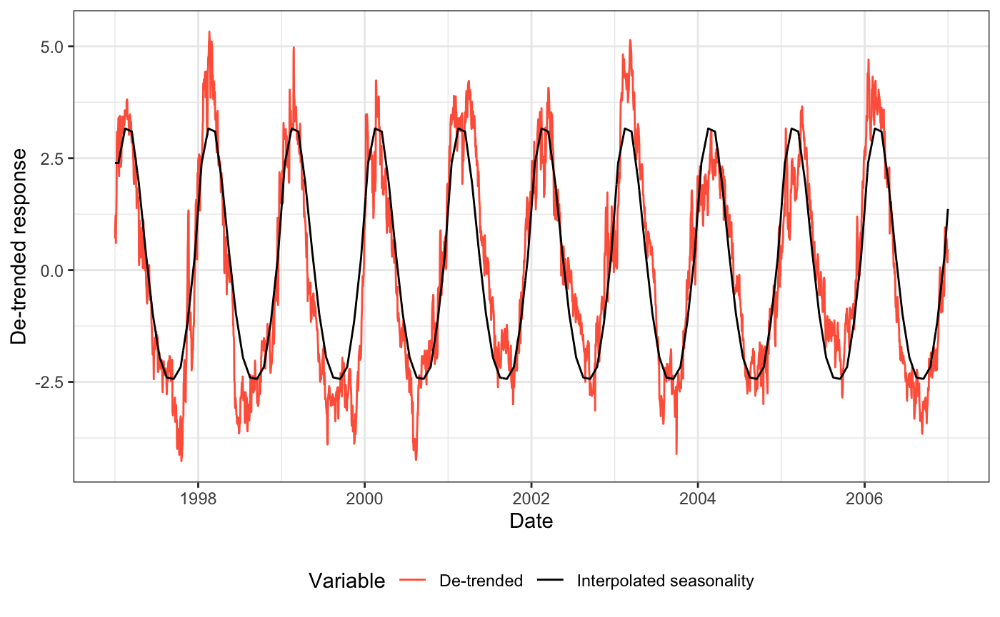
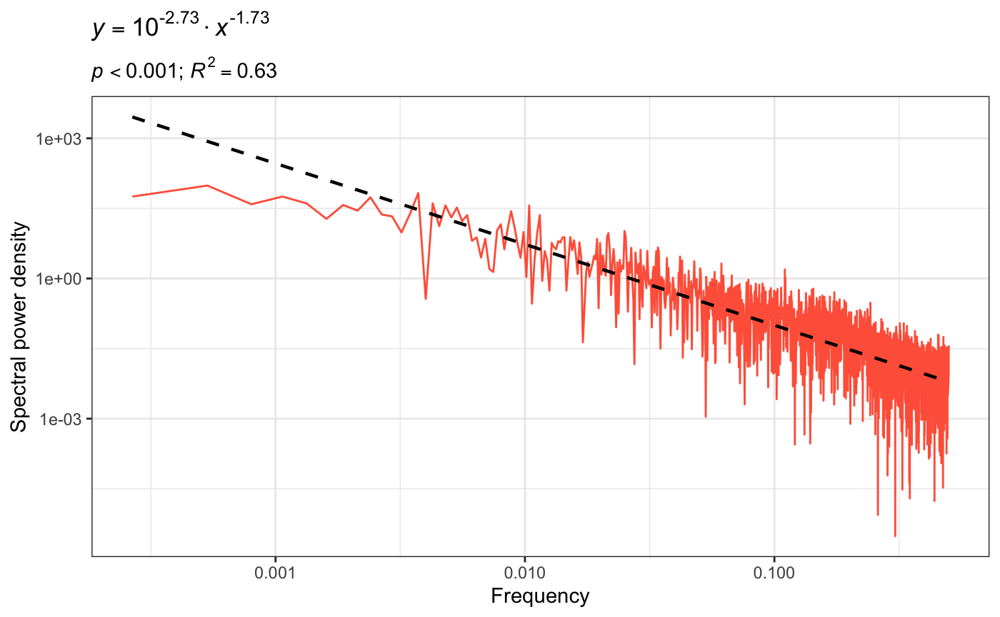

library(envPred)
First, we recommend carefully reading the help page for the main functions
?predictability ?colwell74
To calculate seasonality and colour of environmental noise using sample data (temporally even SST data):
sst_pred <- predictability(sst$time_series, sst$dates, delta = 1, is_uneven = FALSE, interpolate = FALSE, show_warns = TRUE, noise_method = "spectrum")
## Warning in predictability.default(sst$time_series, sst$dates, delta = 1, : Time
## series starts and ends at different times of the year. Starting month is January
## and ending month is DecemberThe package threw a warning, which can be addressed in this example by:
sst <- sst[sst$dates <= as.Date("2007-01-01"), ] sst_pred <- predictability(sst$time_series, sst$dates, delta = 1, is_uneven = FALSE, interpolate = FALSE, show_warns = TRUE, noise_method = "spectrum")
The data can be plotted using ggplot2 methods. The use can plot both the de-trended dataset,
gg_pred(sst_pred, type = "detrended")

or the spectral density on the log 10 scale
gg_pred(sst_pred, type = "spectral")

Finally, the package also handles temporally uneven NPP data with NAs (carefully check warnings), by using the Lomb-Scargle Periodogram from package lomb.
npp_pred <- predictability(npp$time_series, npp$dates, delta = 8, is_uneven = TRUE, interpolate = TRUE, show_warns = TRUE, noise_method = "lomb_scargle")